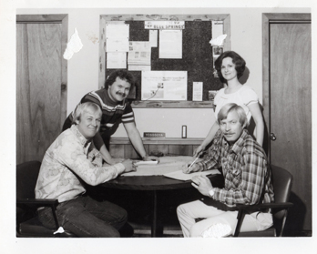

 Meyer Brothers Building Company was co-founded in 1977, by Dave and Roger Meyer. Originally located in Blue Springs, Missouri, the Meyer brothers initially specialized in sales and the erection of metal buildings.
Today Meyer Brothers is a professionally operated construction firm, offering expertise in full-line Design/Build and construction services to commercial, industrial, and institutional users within a 150 mile radius of Kansas City.
The Company now offices at the Business Exchange, a new 50,000 sq. ft. tilt-up office building constructed by the firm.
Our portfolio is made up various projects which include offices, manufacturing buildings, warehouse and distribution centers, automobile dealerships, shopping centers, health care facilities, churches, family life centers, and many more.
Meyer Brothers specializes in build-to-suit for national clients of upper-level retail buildings and development. We also specialize in the construction of site-cast architectural concrete building systems.
Meyer Brothers works with its
clients through the entire planning and construction
process to occupancy utilizing the Design/Build
process.
Current organizational participation includes the following: